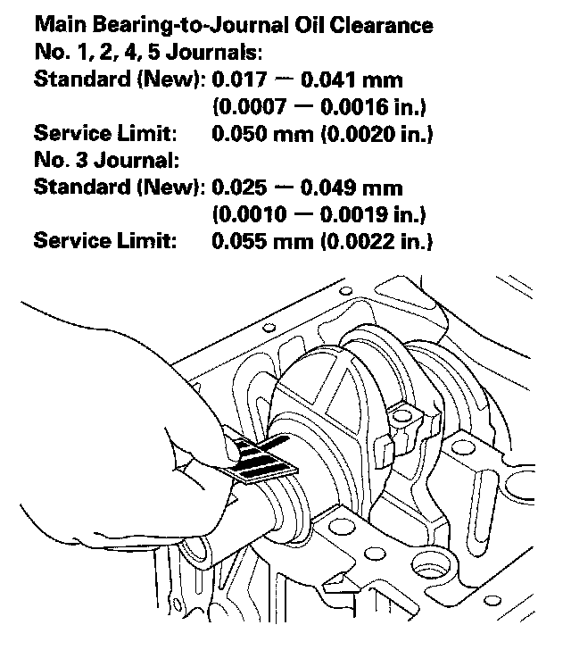
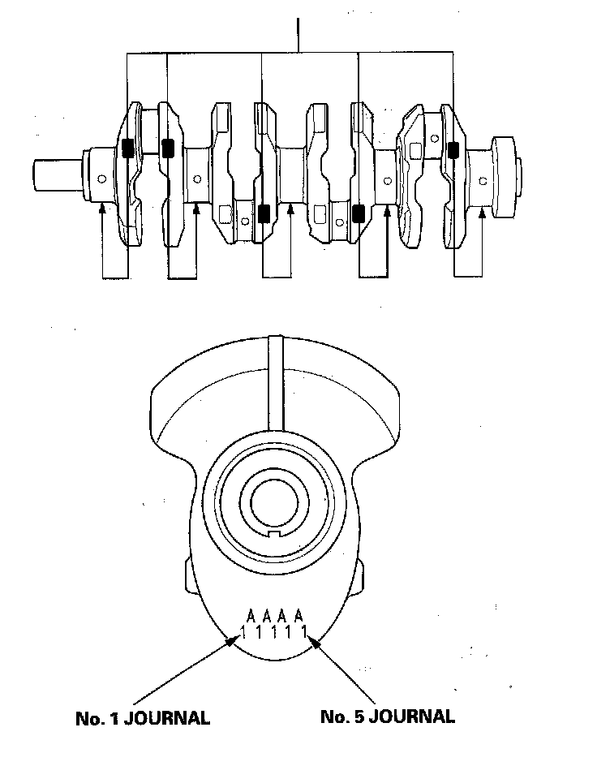
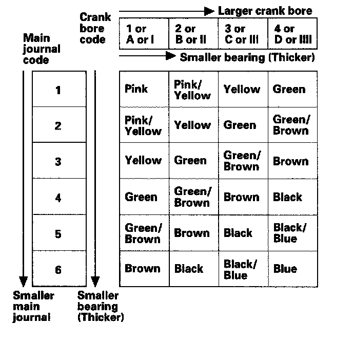

Crankshaft Main Bearing: Service and Repair
Crankshaft Main Bearing ReplacementMain Bearing Clearance Inspection
1. To check main bearing-to-journal oil clearance, remove the lower block and bearing halves.
2. Clean each main journal and bearing half with a clean shop towel.
3. Place one strip of plastigage across each main journal.
4. Reinstall the bearings and lower block, then torque the bolts to 29 N-m (3.0 kgf-m, 22 lbf-ft) + 56° in the proper sequence.
NOTE: Do not rotate the crankshaft during inspection.
5. Remove the lower block and bearings again, and measure the widest part of the plastigage.

6. If the plastigage measures too wide or too narrow, remove the crankshaft, and remove the upper half of the bearing. Install a new, complete bearing with the same color code(s), and recheck the clearance. Do not file, shim, or scrape the bearings or the caps to adjust clearance.
7. If the plastigage shows the clearance is still incorrect, try the next larger or smaller bearing (the color listed above or below the current one), and check again. If the proper clearance cannot be obtained by using the appropriate larger or smaller bearings, replace the crankshaft and start over.
Main Bearing Selection
Crankshaft Bore Code Location
1. Numbers, letters or bars have been stamped on the end of the block as a code for the size of each of the five main journal bores. Write down the crank bore codes.
If you can't read the codes because of accumulated dirt and dust, do not scrub them with a wire brush or scraper. Clean them only with solvent or detergent.

Main Journal Code Location
2. The main journal codes are stamped on the crankshaft in either location.

3. Use the crank bore codes and crank journal codes to select the appropriate replacement bearings from the following table.
NOTE:
^ The color code is on the edge of the bearing.
^ When using bearing halves of different colors, it does not matter which color is used in the top or bottom.
